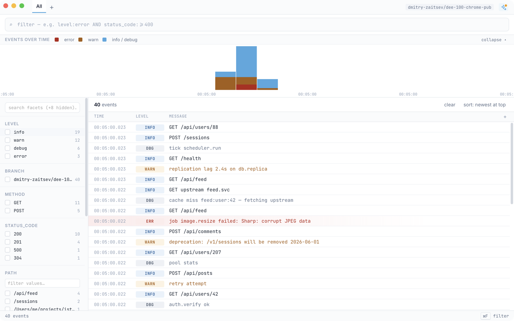

Pipe any process into istoria and tail, search, and filter its logs in one
window. Local, fast, no setup.
brew install dmitry-zaitsev/tap/istoria

what it does
level:error AND status_code:>=400.
~/.istoria. No daemon, no server.
getting started
Install via Homebrew. macOS and Linux.
brew install dmitry-zaitsev/tap/istoria
Pipe a process into it.
npm run dev | istoria
Level it up.